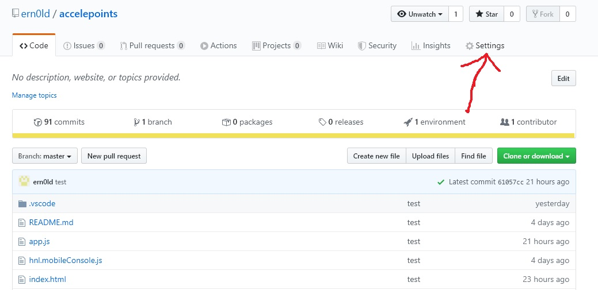
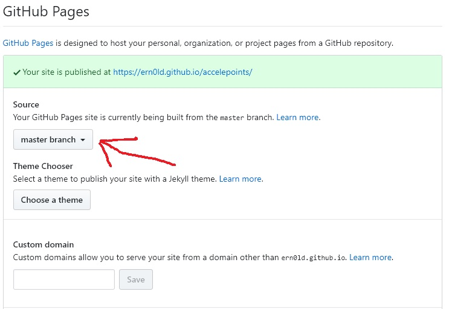

GitHub-asennusohjeita
1. Lataa Git-scm osoitteesta https://git-scm.com/download
Asennuksen aikana valitse Choosing the default editor used by Git-kohdassa -> Use Visual Studio Code as Git’s default editor
-> Kohdassa Configuring the terminal emulator to use with Git Bash-kohdassa -> Use Windows’ default console window
Käynnistä Git Bash. Palataan tähän myöhemmin.
2. Rekisteröidy GitHubiin osoitteessa https://github.com/
Kun rekisteröinti on valmis, jätä vielä toistaiseksi luomatta Gitin ehdottama uusi repository. Tehdään muutama asetus ensin ja palataan tähän pian.
Älä kuitenkaan sulje GitHub.com-sivua, tulemme pian takaisin.
3. Avaa äsken asennettu Git Bash (terminaali)
Kirjoita seuraava komennot
git config –global user.name ”Nimesi”
git config –global user.email ”sähköpostisi”
Siirry terminaalissa kansioon, jonka loit aiemmin (ekaSPA)
Terminaalissa navigoiminen -> cd kansion nimi (avaa kansion)
cd .. (Poistuu sen hetkisestä kansiosta ja siirtyy sen yläkansioon)
Eli terminaalissa esim.
cd c: -> cd users -> cd Erkki -> cd documents -> cd ekaSpa
Jonka jälkeen ollaan osoitteessa C:\Users\Erkki\Documents\ekaSPA
Kun olet siirtynyt terminaalissa haluamaasi kansioon esim. C:/Erkki/munkansio
Kirjoita seuraavat komennot
git init
# alustaa kansion gitin local repositoryksi
git add .
HUOM!! Tämä pitää tehdä kahdesti, koska ensimmäisellä kerralla tulee varoitus
# valmistaa kaiken siirrettäväksi remote repositoryyn (luo mm. README.md-tiedoston)
(git status näyttää repositoryn statuksen)
Tässä kohdassa voit mennä luomaan uuden repositoryn osoitteessa github.com (rekisteröinnin jälkeen tullut kohta, jonka yli hyppäsimme)
Kun uusi repository on luotu, kirjoita terminaaliin
git remote add origin remote https://github.com/käyttäjänimesi/repositorysi_nimi.git
#asettaa remote repositoryn
git remote -v
#todentaa remote repositoryn url-osoitteen
git push -u origin master
#”Työntää” local repositoryssa tapahtuneet muutokset remote repositoryyn
Lisää Visual Studio Codeen GitHub-lisäosa
Visual Studio Codessa valitse View->Extensions (tai paina Ctrl+Shift+X) ja kirjoita GitHub. Valitse ensimmäinen tulos ja Install.
Omat projektit nettiin (GitHub toimii palvelimena
Mene omaan projektisi repositoryyn github.comissa ja paina settings (kuvassa).
Selaa alaspäin kunnes löytyy kohta Github pages.

Aseta kohtaan Source -> master branch.

Odota hetki ja voit nähdä projektisi osoitteessa https://kayttajatunnus.github.io/repositorysi_nimi/
Erilaisia komentoja terminaaliin (Git Bash)
mkdir munkansio (Luo kansion nimeltä munkansio)
touch munteksti.txt (luo teksitiedoston nimeltä munteksti)